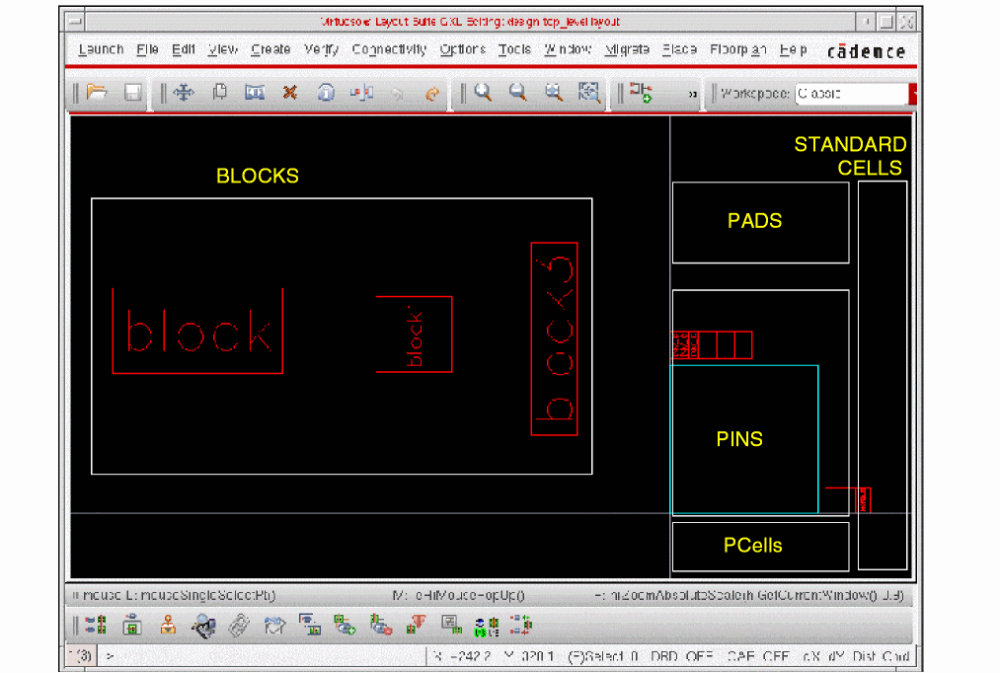

F
Migration from Preview to Floorplanner
From the IC6.1.0 release, Virtuoso Preview has been replaced by Virtuoso Floorplanner on OpenAccess. Both Preview and Floorplanner contain automatic and interactive floorplanning tools and technologies that help designers develop a layout from a schematic in a methodical manner. However, there are differences in the functionality and use models of both tools. The following sections describe the use model differences between Virtuoso Preview IC5.1.41 and Virtuoso Floorplanner IC6.1.x.
Preview-Floorplanner Menu and Feature Differences
The following features and menus have changed in Floorplanner:
- Configuring the Physical Hierarchy
- Setting the Cell Type
- Generating the Physical Hierarchy
- Editing Soft Blocks
- Enabling Floorplanner
- Generating Design Objects
- Controlling the Visibility and Selectability of Objects and Layers
- Using the Menu Commands
Configuring the Physical Hierarchy
The Hierarchy Browser in Preview has been replaced with the Configure Physical Hierarchy (CPH) functionality in IC6.1.x. CPH is a physical hierarchy configuration utility that lets you specify how a layout implementation is generated from a specific schematic design. The CPH window has three modes of operation: Hierarchy Configuration, Component Types, and Soft Blocks. Use the Soft Block mode to configure bindings for the soft blocks to be generated in the layout canvas.
This section describes the following differences between the Hierarchy Browser and the CPH functionalities:
Launching the GUI
The following table describes the various methods to launch the two interfaces:
Creating Soft Blocks
In Preview, you use the Create Soft Blocks form to create soft blocks from selected regions, groups, or instances.
In IC6.1.x, you can define soft blocks in Configure Physical Hierarchy – Soft Block mode, and then use either the Floorplan – Generate Physical Hierarchy or the Generate Abstract From Symbol command to generate the soft blocks in the layout canvas.
For more information about CPH, see
Setting the Cell Type
The Set Cell Type form in IC6.1.x is the equivalent of specific properties required in Preview on the abstract views. It is similar to the prCellType and prCellClass instance master properties. The Set Cell Type form is used to set different celltypes. The following table lists the various celltypes supported by Floorplanner and their corresponding Virtuoso Design Environment attributes:.
| Instances | Virtuoso Design Environment Attributes |
|---|---|
With integration with the Layout XL environment, the Custom Cells option is added, which corresponds to Pcells in Layout XL.
For more information, see
Generating the Physical Hierarchy
The Generate Physical Hierarchy interface has changed in IC6.1.x with integration with the Layout XL environment. The tool now uses the Layout XL netlister. Generate Physical Hierarchy generates the physical hierarchy based on the configuration defined in the Configure Physical Hierarchy window. It also creates soft layouts and soft abstracts in the layout canvas corresponding to the configuration view generated by CPH. Generate Physical Hierarchy runs in batch mode and uses two main engines: Generate All From Source (for all soft layouts) and Generate Abstract From Symbol (to generate soft abstracts).
For more information, see Generating a Physical Hierarchy.
Editing Soft Blocks
In Preview, the Edit Block form provides options to change the boundaries of a soft block to reflect the aspect ratio and area utilization.
In IC6.1.x, you use the Edit Soft Blocks form to modify the attributes of individual soft blocks, while taking into account the placement and connectivity requirements in the design. Using the Edit Soft Blocks command, you can modify:
- The type of soft block to be created.
- The height, width, area, or shape of the PR boundary.
- The length, width, layer, and signal type of soft pins.
- Routing and placement obstructions inside the block.
For more information, see
Enabling Floorplanner
The Floorplan menu is enabled by default in Layout XL and higher tiers.
Generating Design Objects
The process of generating design objects now provides the following additional features:
-
Auto Initialization of Design
After data generation, Floorplanner initializes the design and arranges its components according to their cell types. Floorplanner places components of the same cell type in different areas in the design as shown below:
 -
Soft Layout Generation
All the views generated by Floorplanner are layout views. The cell type depends on the Type setting in CPH. When set to LAYOUT, the tool adds thesoftMacrocell type to make it soft. The soft layout is generated by Generate All From Source in batch mode. After generating the soft layout, only the PR boundary and the pins are visible, and all other components and their connectivity are hidden at the top level. You can descend into the layout view to make the other components visible. -
Soft Abstract Generation
All the views generated by Floorplanner are layout views. The cell type depends on the Type setting in CPH. When set to ABSTRACT, the tool adds theblockBlackBoxcell type to make it soft. Soft abstract is a layout view with only the PR boundary and pins, but no connectivity and components.
Controlling the Visibility and Selectability of Objects and Layers
In Preview, the following windows are used to control the visibility and selectability settings of objects and layers:
- Object Selection Window (OSW): Controls the selectability and visibility of floorplanning objects in the design.
- Layer Selection Window (LSW): Controls the layer visibility.
These windows are now replaced by the Palette assistant, which is a single assistant container that encapsulates the Layers, Objects, and Grids panels. You can hide, dock, or undock the entire Palette or each of the three panels individually. The following graphic shows the differences between the OSW, LSW, and Palette panels:
The above change impacts the use model of some commands such as level-1 editing and net selection. For more information, see
Using the Menu Commands
The table below summarizes the changes in the following Preview menu commands:
- Design Menu
- Create Menu
- Edit Menu
- Floorplan Menu
-
Analyze Menu
Saves the current level and also one level down for the
autoAbstractand theautoLayout.Uses the VLS use model, which saves only the current level and not one level down.
Saves the current level of hierarchy and one level down for the soft blocks in a different view. The new top-level view is automatically remastered with the new soft blocks view.
Specifies the new view name for the top level and lower levels. The new top-level is remastered with the new soft blocks view. For binding with the VLS XL environment, the new view must be added to the Physical View List on the Extraction tab of the Options – Layout XL window.
Works on the current level and on soft blocks instantiated at the current level. A confirmation window displays information about the instances that are edited and that have been discarded.
Discards edits. A confirmation window is displayed, but there is no information about discarded instances.
Design – Make Editable/Make Read Only
Makes the current view and the soft block view, which are instantiated in the current view, either read-only or editable. By default, the soft block view is editable.
File – Make Editable/Make Read Only
This command affects only the current level, and not the soft blocks. To make a hierarchy editable, choose Edit – Hierarchy – Make Editable.
Creates a region in a specific LPP. You must specify the name, Aspect Ratio, and Area Utilization for the LPP. You can then move the region to the required location.
Create – P&R objects – Cluster Boundary or Cluster Interface
Cluster boundary is the equivalent object in the new environment. A cluster boundary can exist only if a cluster exists. A cluster is the equivalent to a group. You first need to create a cluster (Create – P&R objects – Cluster) before creating a cluster boundary.
For more information, see
Creating Cluster Boundary the Virtuoso layout suite documentation.Creates a rectangular shape, which corresponds to a group, on the specified LPP at the bottom of the boundary. You must specify the name, Aspect Ratio, and Area Utilization.
Create – P&R objects – Cluster
The equivalent object in the new environment is a cluster, which has no physical representation in Virtuoso.
The only way to select a cluster is using the Create – Cluster form. You can cross-highlight the cluster members and the cluster boundaries. You do not need to specify any area utilization or aspect ratio because the members determine the behavior of the cluster.
Creates a soft block that includes the selected instances. In addition, a new cell is created in the library, and therefore a new level of hierarchy is added. The connectivity is propagated inside the block. Some pins are created in the new instance and the top-level connectivity is updated accordingly.
It is the equivalent in terms of feature, but the use model is different in terms of results. The tool uses the same infrastructure for Floorplanner and VLS XL. Floorplanner has inherited some limitations in terms of hierarchy modification. The binder cannot handle hierarchy modifications like Flatten and Make Cell. Therefore, the above command creates a new cell, but the binder is not updated with the new hierarchy.
Runs Abstract Generator in batch mode with the selected set of cells. If no cells are selected, it runs on the current cellview.
Abstract Generator runs directly with the techfile definitions, and therefore does not require additional files for the technology rules.
Generates a row in the form of a shape on the specified LPP. You must specify the Row Type, Placement Class, Row Orientation, Row Distribution Mode, Channel Spacing or Factor or the Number of Row, and the row Flip setting.
Generates a row object. The interface has been modified, but the information required is the same as Preview. An interface for the Custom Placement Area has been added. The Dressing Template part is specific to Custom Placement Area. For more information, see
Creating Rows the Virtuoso layout suite documentation.Groups the selected nets. Select the required nets in the canvas and specify a bus name. You can select, query, and edit buses. Pin Optimizer and the Block Placer consider buses as constraints.
Constraint Manager Assistant – Bus
You define bus constraints. A bus constraint is a group of two or more nets. To define a bus constraint using the Constraint Manager, select the required nets in the Navigator window and click Bus from the constraints list in Constraint Manager.
Creates a soft pin by creating a duplicate of the selected pin. Also lets you add feedthrough pins either at the top-level or in the soft block.
Creates soft pins for soft blocks. Unlike Preview, you can create multiple soft pins.
Create – Feedthrough Terminal Pins with the filter Net Class or Bus
Creates feedthrough pins. You can choose the number of pins to add. The new net is propagated to the soft block netlist and is compatible with VLS XL.
Creates a blockage on the specified LPP. You must specify the blockage type and draw the shape on the canvas.
Create – P&R Objects – Blockage
The tool uses the
Blockageobject to represent blockages. The interface has been modified, but the information required to create a blockage is the same – Blockage type and Layer – if needed.Additional methods for creating blockages (automatic and manual) are available in the new environment. You can also attach blockages to instances or clusters.
Creates a wire from an unrouted string. Use this command to manually route critical nets or power supply nets, or to edit connections after detailed routing.
The use model is the same as Preview. The only difference is that the tool uses
oaPathSegto represent wires.Lets you move regions, groups, rows, instances, and soft pins.
Resizes soft block boundaries to a multiple of the specified placement grid and snaps soft block pins to the specified routing grid.
Available through the
F3option form of the Move command.Snaps moved objects to grids and pins to the PR boundary. Also lets you specify whether pins must be resized during snapping.
Aligns the edges of the selected rows with the point you select with the mouse.
Edit – Quick Align and Edit – Advanced – Align
The two commands can be used to perform similar tasks, but they differ in their usage. Use these commands to align objects to a point, an edge, a layer, or a target axis.
Lets you view and edit properties of objects in the current design.
You use the Property Editor assistant to view and edit properties of components in the design.
Displays the Search For form, which lets you search for objects in the design and then highlight or select these objects.
Individual P&R Objects-Related Forms
After consolidation with VLS, the option is integrated with the P&R objects in this interface such as clusters, soft blocks, cluster boundaries, and soft pins.
Changes the boundaries of a soft block to reflect the aspect ratio and area utilization required for the block.
Modifies the attributes of individual soft blocks taking into account the placement and connectivity requirements of the design.
Lets you move, grow, push, and plow soft blocks in any direction according to certain grid steps.
Floorplan – Soft Block Update – Adjust Blocks
Adjusts the existing floorplan by abutting and pushing the soft blocks in the design.
Aligns the selected blocks. You specify one block as the anchor block. The command aligns the second block with the anchor block.
Aligns objects or shapes in a cellview. In the new environment, you have more flexibility in terms of the type of alignment. You can align objects to a point, another object, or a layer. You can also align a layer with another layer or object.
Adjusts symbolic pins in soft blocks by snapping them to grids depending on their sides.
Snaps both top-level and level-1 pins to grids appropriate to the block type being edited.
Forms related to the Move, Reshape, Stretch, and Chop commands have options that let you snap boundaries and pins automatically to the grid during interactive editing.
Lets you change the Aspect Ratio and Area Utilization, and re-compute the region boundary.
You cannot edit the cluster boundary parameters. You must delete the cluster boundary and re-create it as per your requirements.
Lets you change the Aspect Ratio and Area Utilization, and re-compute the boundary.
Create – P&R objects – Cluster
Lets you select and edit clusters. Aspect ratio and area utilization options are not available because a cluster is a free form.
Lets you add, remove, fit, and unfit members in a region or group.
In the new environment, a cluster boundary is linked to a cluster, and therefore cannot be dissociated. All members of a cluster are members of the cluster boundary. To change the cluster members, use Create – P&R Objects – Cluster.
The Fit command is available in the interface of Create – P&R objects – Cluster Boundary.
Flattens the soft block and instantiates all its instances at the current level. The connectivity is updated and all associated pins are deleted.
This is the equivalent command in the new environment in terms of feature, but the use model is different in terms of the results.
With integration with VLS XL, the tool uses the same infrastructure for Floorplanner and VLS XL. Floorplanner has inherited some limitations in terms of hierarchy modification. The binder cannot handle hierarchy modification such as Flatten and Make Cell.
The above command flattens the selected cell, but the binder is not updated with the new hierarchy. The instances from the soft block do not have the connectivity.
Edits the existing bus pins. You can also edit or delete the associated side constraints and layers.
Navigator Assistant - Bus Constraint
You need to create a Bus constraint in the Navigator assistant on the connected nets. The pins inherit the constraint automatically.
Lets you edit wires. Wires are routed nets. The Wire menu provides commands to split and move wire segments, stretch rails, and change routing layers. To change the width of a wire, use the Edit – Properties command.
There is no specific command for editing wires in the new floorplanner interface. You can use any Edit command on existing wires.
The Edit – Select – Select All and Edit – Select – Deselect All commands are the same as in Preview. For the other commands, such as Edit – Select – By Name, and By Property, use the Tools – Find/Replace interface.
The Connected To option is not available in the new environment.
Removes the selected region, group, row, bus, or soft pin from the database. This command works only on floorplan objects, and does not modify the netlist.
Cancels the last interactive command that you used and returns the selected objects to their previous statuses and locations.
Displays the Edit Netlist Toolbox that lets you make changes to the netlist. You can change connections and instances in the netlist, read an ECO file, or compare the current view with another view.
The new environment is not based on netlists, and therefore it does not include any option to edit netlists. It is directly linked to the schematic. You can directly modify the schematic by using Connectivity – Update – Components and Nets.
With migration to OA, symbolic pins are not available in the new environment. This is replaced with geometric pins as in VLS-L.
Snaps both top-level and level-1 pins to the grid appropriate to the type of block being edited. The Move, Reshape, Stretch, and Chop command interfaces have options that let you snap boundaries and pins automatically to grids during interactive editing.
Aligns the selected pins. You select the reference pins and then the target pins. These pins are automatically aligned based on their connectivity.
Aligns objects or shapes in a cellview. All alignment commands in VLS-L and Floorplanner have been consolidated. In the new environment, you have more flexibility in terms of the type of alignment. You can align objects to a point, another object, or a layer. You can also align a layer to another layer or other objects.
Respaces the selected soft pins along the block boundary. You must specify the spacing size, the type of spacing (Edge to Edge or Center to Center), and the start side (Left/Top or Right/Bottom).
Place – Pin Placement (Pin Spacing section)
The Pin Planner tab in the Pin Placement form includes options to respace pins on the same edge. You can also generate spacing constraints. For more information, see Pin Planning.
Edit – Soft Pins – Optimize/Float
Optimizes, fixes, or floats all or selected soft pins. The pin optimizer tries to position pins to get the shortest possible net length at the top level.
Positions soft block pins in a manner that helps obtain the shortest possible net length at a particular level in the design. The objects that can be selected for pin optimization are: top-level and soft block pins, top-level PR boundary, soft block instances, and nets. For more information, see Pin Optimization.
Edit – Soft Pins – Pin Overlap
Checks the design for soft pins that overlap other soft pins and displays markers on the shorted pins.
Floorplan – Pin Checker (ICADVM20.1 Only)
Pin Checker lets you perform several checks on pins, including pin overlaps, and reports the results. For more information, see Using the Pin Checker.
Lets you perform block operations by using the Chop, Reshape, and Stretch commands.
Edit – Stretch, Edit – Basic – Chop, Edit – Advanced – Reshape
A number of Virtuoso Layout Suite commands have been enhanced to support the Level-1 Editing mode. To use these commands, you must first enable the Level-1 Editing mode. You can then move, stretch, reshape, or chop objects in this mode. You can also find and replace nets, discard edits, and save hierarchical cellviews under a different name. For more information about enabling the Level-1 Editing mode and using the various editing options, see
Editing Soft Blocks in the Virtuoso layout suite documentation.Estimates and creates a design boundary and a simple floorplan with the design objects applicable to the place and route tool. If you have an existing floorplan, you can remove the data and reset the locations of design objects. Initialization creates I/O rows and standard cell rows.
The use model is the same, but the interface has been modified according to the new objects that are supported. For more information, see Reinitializing the Design.
Includes the following commands to optimize I/O positions:
For more information, see I/O Planning and Placement.
Floorplan – I/O Constraint File
Lets you use an I/O constraint file to place I/O cells in an initialized design. The file lists the I/O cells associated with each side of the chip design and gives the orientation of each I/O cell.
No corresponding option available
The constraints file is no longer supported. You need to define your I/O constraints in the Constraint Manager.
Automatically creates placement groups or blocks using a ratio-cut algorithm.
No corresponding option available
The automatic partitioner is not available. Due to integration with the Layout XL environment, the tool has some restrictions in terms of flexibility on the schematic and layout correspondence.
The only way to partition is to use groups, which is now Cluster. (Refer to the Create – Groups commands.)
Automatically places hard blocks, soft blocks, and I/Os in pure block designs. It minimizes the wire length and chip area, while preserving user-specified placement constraints. The command can adjust soft blocks within the specified aspect ratio to maximize chip density.
The functionality remains the same. In the new use model, the block placer reads the constraints specified in the Constraint Manager. You can also specify additional constraints in the Block Placer form, which the block placer respects.
The block placer takes into account the blockages in a design and does not place blocks on them.
For more information, see Placing Blocks.
Floorplan – Create / Update Auto Layouts
Updates a soft block
autoLayoutview with the following information from the higher levelautoLayoutview:No corresponding option available
The tool does not use
autoLayoutbecause it works directly with the layout, and notautoAbstract, as in Preview.The equivalent of
autoLayoutis a layout with cell typeBlockBlackBox.Floorplan – Floorplan File (Preview IC5.1.41) / Template File (IC6.1.x)
Lets you read, write, and edit the floorplan constraints and placement status information in a given floorplan file.
You no longer need to edit an ASCII template file manually. Use the above capability to import into the current cellview predefined information from another layout cellview. This approach lets you:
Changes the view name of the library masters that the specified instances refer to. This command also lets you replace all place and route abstract views with their corresponding layout views for design verification.
The above command provides more flexibility because you can switch an instance to another instance with a different library, cell, or view name. The Terminal Checker is also available.
For more information, see
Re-mastering Instance Views .Create – P&R Objects – Track Pattern Editor
Creates tracks in both preferred and non-preferred layer directions. For each routing layer, you can define or edit the routing grid. The above command can only modify the detailed routing grid, but not the global grid. For more information, see
Creating Track Patterns .Makes the selected nets and pins special. Special nets and pins are located in the
SPECIALNETSsection of the DEF file and are routed by theSROUTEcommands.No corresponding option available.
There is no specific interface for special routing in the new environment.
You can do it through the Edit Properties window by changing the Net Signal Type to
PowerorGround. To unset it, you have to do the same, but you need to change the Signal Type toSignal.To report all nets with a specific Signal Type, use Tools – Find/Replace Net – Signal Type =
Power/Ground. You also need to set therouteMethodtogeometricon oneinstTermof this net through SKILL commands.Floorplan – Distribute Instances
Removes cell overlaps and redistributes cells to remove routing congestion.
Place – Custom Digital – Auto Placement (Virtuoso Custom Digital Placer)
Use Virtuoso Custom Digital Placer to place standard cells in rows.
Displays a window that contains physical analysis information about the selected design, region, group, and instance. The information in the window varies depending on the type of object selected.
Displays the number of nets connecting the selected blocks, regions, groups, and instances in the floorplan.
Creates a ruler to measure objects and distances between objects in a cellview. You can also draw a segmented ruler to measure dimensions such as half perimeters, which require measurement on more than one axis.
Deletes the rulers that are currently displayed in the design window.
Displays a text window that shows the violations in the view.
No corresponding option available
The command is now fully interactive. The check is done automatically in the VLS environment. The difference is in terms of the use model. Overlaps between a PR boundary and a placement blockage are notified, but overlaps between two PR boundaries are not notified.
Analyze – Check – Soft Pins Overlap
Checks the design for soft pins that overlap other soft pins.
No corresponding option available
The command is not available, but the interactive checker is available to report shorts. Also, the Pin Optimizer checks for pin overlaps.
Analyze – Check – Soft Pins Spacing
Checks the design for soft pins that violate the minimum spacing rules.
No corresponding option available
The command is no longer available, but the interactive checker performs the check.
Also, Pin Optimizer checks for pin overlaps and the validity of the spacing value on each layer.
No corresponding option available
The command is no longer available. The Constraint Management System includes an interactive checker, which shows violations on the Cluster constraints.
In Preview, there is a specific way to put blockages over a soft block. The blockages are stored in the master and are not selectable at the top level. To edit a blockage, select the required soft block and then select Edit – Properties.
Launch – Configure Physical Hierarchy – Soft Block mode – Attributes – LayerHalo Obstructions
Edit – Soft Blocks – Obstructions
In Floorplanner, you can create halos, which are blockages that are stored in the master, but are not editable from the top.
As compared to Preview, there are several blockage types available that you can choose from. Also, you can set the blockage offsets from all four sides of the soft block.
Return to top